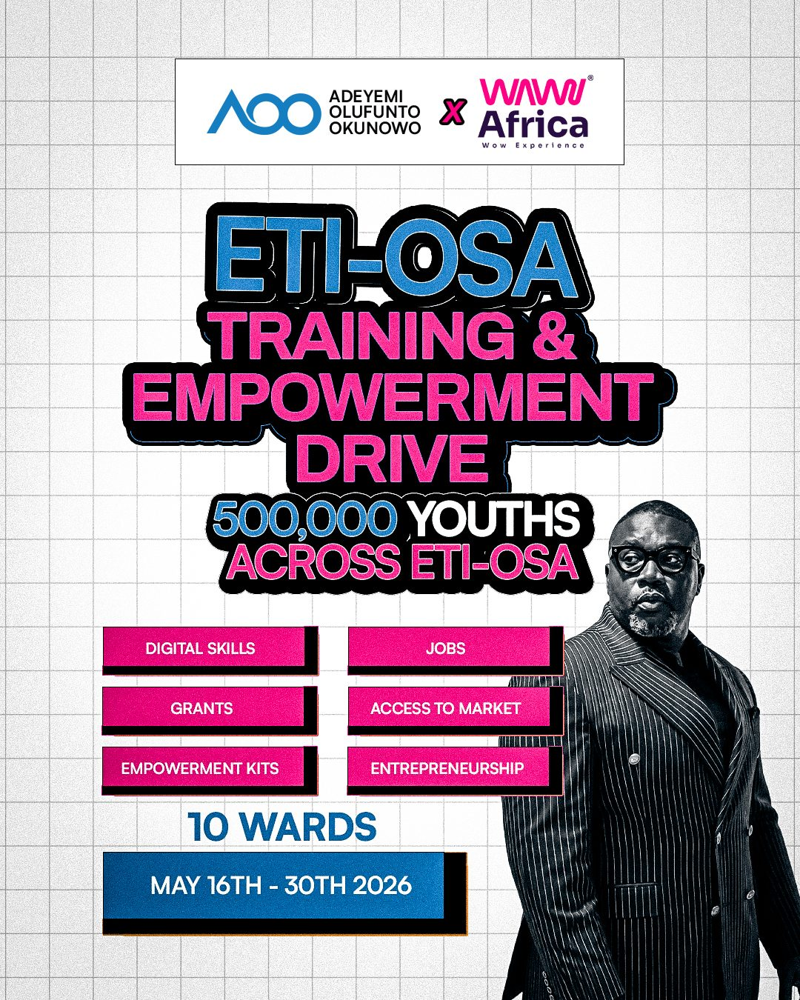
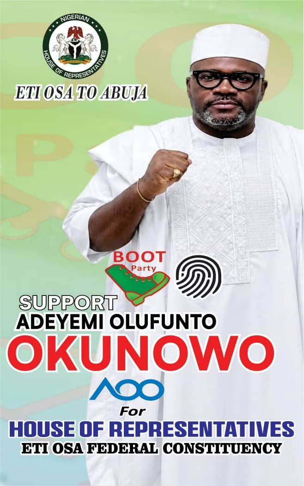

01
Economic Growth
& Enterprise
Policies that support business, attract investment, and expand opportunity across Eti-Osa.
A systems-driven leader running for the House of Representatives, Eti-Osa Federal Constituency. Building a movement that moves governance from promises to performance - structured, transparent, and measurable.
Trained in Economics at Leicester. A decade building high-performing organizations.
MEET ADEYEMI"Governance must move from promises to performance - structured, transparent, measurable, so citizens can see, track, and evaluate results in real time."
Policies that support business, attract investment, and expand opportunity across Eti-Osa.
Systems that enable skills, employment, and long-term economic participation.
Strengthening access to quality education and practical learning pathways.
Constituents informed, engaged, and actively involved in every decision.
A constituency-wide programme equipping young people across all ten wards with digital skills, jobs, grants, and access to markets - delivered in partnership with WAW Africa.

Every initiative is costed, dated, and reviewed quarterly. The full brief is available to partners on request.
Whether you bring time, voice, partnership, or material support, the path is the same: talk to the campaign desk. We'll meet you with a clear brief, a named contact, and a receipt for every commitment.
Eti-Osa to Abuja is built ward by ward, conversation by conversation. Your stake - large or small - becomes a tracked line in the public roadmap.
Request the partnership brief - banked initiatives, costs, and verified support channels.
Speak with a campaign officer to discuss partnership, sponsorship, or in-kind support.
Join the ward teams, host a town-hall meeting, or help deliver an outreach drive.
Back a named drive - water taps, school renovation, women's enterprise, training.
Request the partnership brief and the campaign desk will route you to the right channel.

Opening day of the Eti-Osa Training & Empowerment Drive with WAW Africa.
Doorstep listening sessions across the next three wards in the constituency.
Closing town hall - public review of the Training Drive's tracked outcomes.
For partnership briefs, volunteer enquiries, or speaking requests - reach the campaign desk and we'll meet you with a clear, named response.